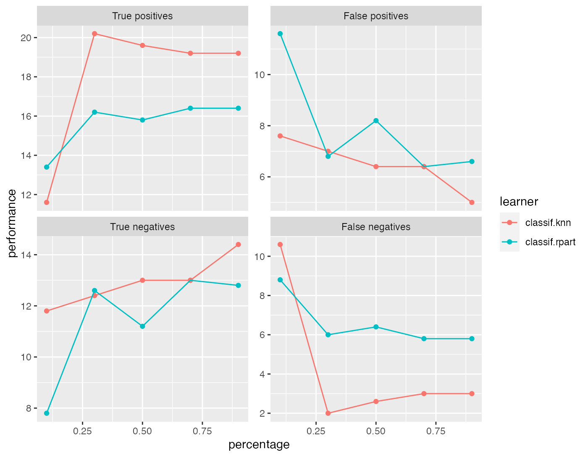
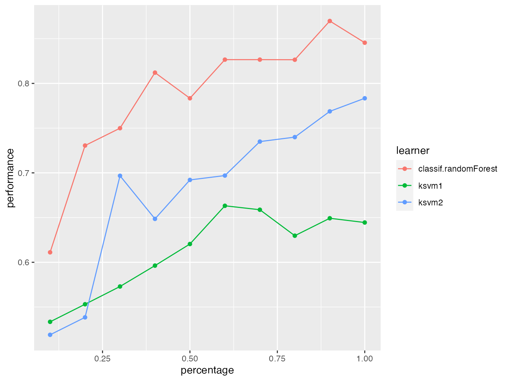
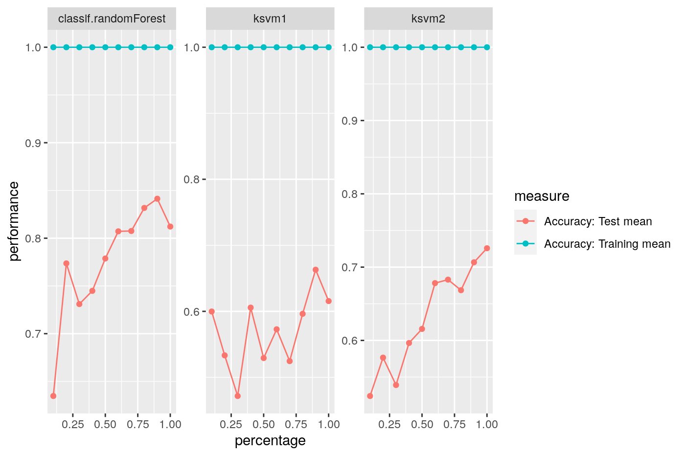

To analyze how the increase of observations in the training set improves the performance of a learner the learning curve is an appropriate visual tool. The experiment is conducted with an increasing subsample size and the performance is measured. In the plot the x-axis represents the relative subsample size whereas the y-axis represents the performance.
Note that this function internally uses benchmark() in combination with makeDownsampleWrapper(), so for every run new observations are drawn. Thus the results are noisy. To reduce noise increase the number of resampling iterations. You can define the resampling method in the resampling argument of generateLearningCurveData(). It is also possible to pass a ResampleInstance (makeResampleInstance()) (which is a result of makeResampleInstance()) to make resampling consistent for all passed learners and each step of increasing the number of observations.
The mlr function generateLearningCurveData() can generate the data for learning curves for multiple learners and multiple performance measures at once. With plotLearningCurve() the result of generateLearningCurveData() can be plotted using ggplot2. plotLearningCurve() has an argument facet which can be either "measure" or "learner". By default facet = "measure" and facetted subplots are created for each measure input to generateLearningCurveData(). If facet = "measure" learners are mapped to color, and vice versa.
r = generateLearningCurveData(
learners = c("classif.rpart", "classif.knn"),
task = sonar.task,
percs = seq(0.1, 1, by = 0.2),
measures = list(tp, fp, tn, fn),
resampling = makeResampleDesc(method = "CV", iters = 5),
show.info = FALSE)
plotLearningCurve(r)
What happens in generateLearningCurveData() is the following: Each learner will be internally wrapped in a DownsampleWrapper (makeDownsampleWrapper()). To measure the performance at the first step of percs, say 0.1, first the data will be split into a training and a test set according to the given resampling strategy. Then a random sample containing 10% of the observations of the training set will be drawn and used to train the learner. The performance will be measured on the complete test set. These steps will be repeated as defined by the given resampling method and for each value of percs.
In the first example we simply passed a vector of learner names to generateLearningCurveData(). As usual, you can also create the learners beforehand and provide a list of Learner (makeLearner()) objects, or even pass a mixed list of Learner (makeLearner()) objects and strings. Make sure that all learners have unique ids.
lrns = list(
makeLearner(cl = "classif.ksvm", id = "ksvm1", sigma = 0.2, C = 2),
makeLearner(cl = "classif.ksvm", id = "ksvm2", sigma = 0.1, C = 1),
"classif.randomForest"
)
rin = makeResampleDesc(method = "CV", iters = 5)
lc = generateLearningCurveData(learners = lrns, task = sonar.task,
percs = seq(0.1, 1, by = 0.1), measures = acc,
resampling = rin, show.info = FALSE)
plotLearningCurve(lc)
We can display performance on the train set as well as the test set:
rin2 = makeResampleDesc(method = "CV", iters = 5, predict = "both")
lc2 = generateLearningCurveData(learners = lrns, task = sonar.task,
percs = seq(0.1, 1, by = 0.1),
measures = list(acc, setAggregation(acc, train.mean)), resampling = rin2,
show.info = FALSE)
plotLearningCurve(lc2, facet = "learner")